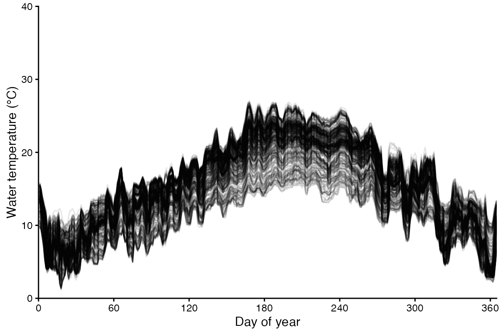
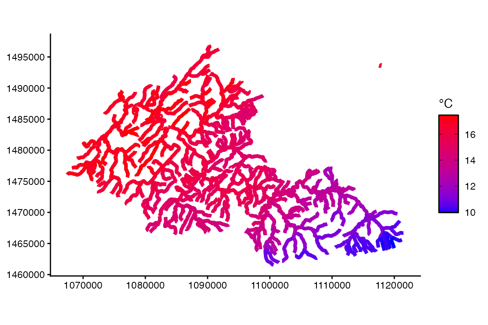
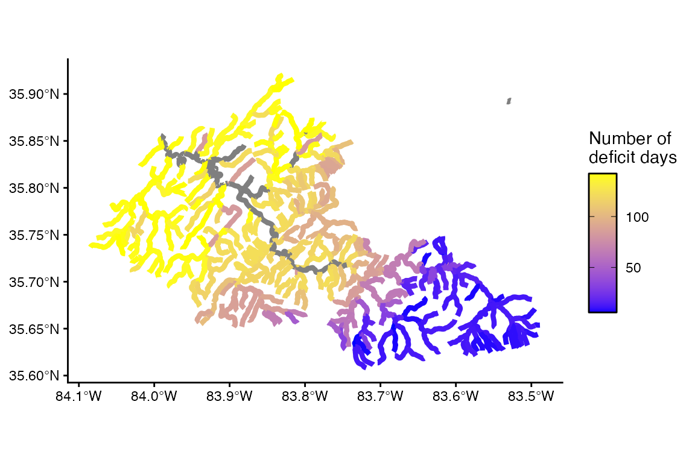
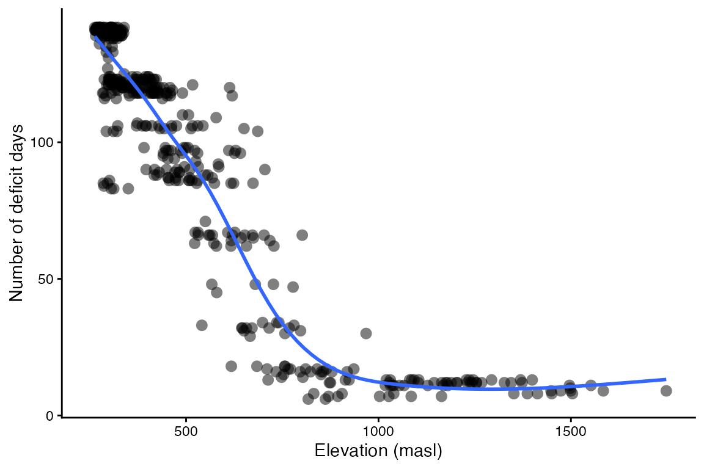
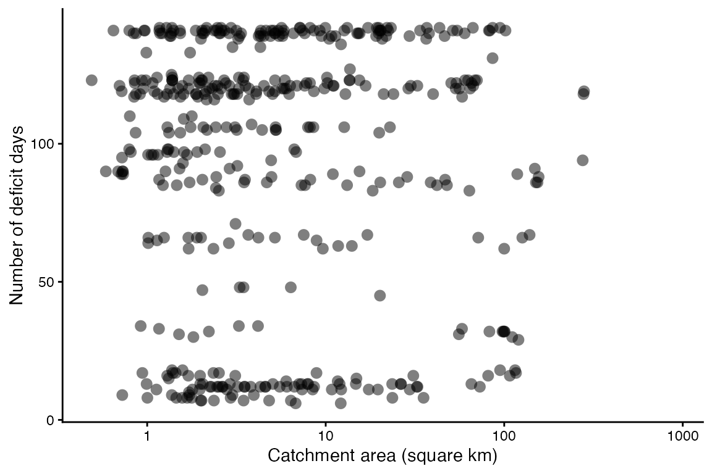

Mapping Brook trout
Mapping_BrookTrout.RmdIn this vignette, you will:
- Explore spatial variation in the performance of Brook trout (Salvelinus fontinalis) in interconfluence stream reaches of the Little River watershed, a tributary of the upper Tennessee River system that drains the Blue Ridge Mountains and Great Smoky Mountains National Park in Tennessee, USA.
- Use bioenergetics modeling to simulate individual performance metrics across 513 interconfluence stream reaches (lotic habitat patches).
- Create maps showing spatially-contiguous variation in these performance metrics and drivers of this spatial variation (e.g., temperature).
First, install the fishyenergy package and load the library. Dependencies include reshape2, stringr, terra, sf, lubridate, and ggplot2.
remotes::install_github("bomeara/fishyenergy")
library(FishyEnergy)Next, load the intrinsic bioenergetics parameters of five example species. These parameters have been published by various authors since the 1980s and are available from Fish Bioenergetics 4.0 (FB4).
data(parms_fb4)Let’s retain only one focal species, Brook trout, and look at these data.
options(width = 500)
parms.salfon <- parms_fb4[parms_fb4$genus_species == "salvelinus_fontinalis",]
parms.salfon
#> genus_species LifeStage Source lwA lwB CEQ CA CB CQ CTO CTM CTL CK1 CK4 REQ RA RB RQ RTO RTM RTL RK1 RK4 SDA FA UA pred_ED
#> 5 salvelinus_fontinalis juvenile_adult Troia modified from: Elliot 1976; Hartman and Sweka 2003; Hartman and Cox 2008 0.00881 3.04 2 0.3013 -0.3055 7.274 17 21 NA NA NA 2 0.0132 -0.265 4.5 20.2 25 NA NA NA 0.172 0.212 0.0314 4162The first column shows the Latin name in snake case. Other columns like lwA and lwB are the intercept and slope of the length-weight equation. Still other columns like CA and CB are the intercept and slope of the mass dependent consumption equation (a negative power law). There’s also specific dynamic action (i.e., the proportion of energy consumed allocated to the cost of digestion), predator energy density, and many other variables defined by Hanson et al. (1997).
Next, we need to load some parameters that potentially vary temporally. The dataframe has 365 rows representing each day of the year. There are five noteworthy columns (i.e., variables):
CP is the proportion of maximum consumption and decrease as prey quantity declines or as exploitative competition increases.
ACT is the activity multiplier where a value of zero would indicate no metabolic costs beyond being at rest. Maintaining position in a flowing stream, avoiding predators, pursuing prey, and engaging in reproductive behavior increase ACT.
The next two parameters (gsi_f and gsi_m) allow the user to model somatic growth of a reproductively mature fish that allocates some energy to gonadal tissue. Separate parameters are provided for females and males because the sexes invest different amounts of energy to their gonads–gsi_f and gsi_m, respectively. The default data assume a reproductively immature fish (i.e., gsi = 0).
Modifying prey energy density (prey_ED) over the year can simulate ontogenetic diet shifts or changes in prey quality. There are numerous published estimates of prey energy density for common prey items like invertebrates, fish, and so on.
options(width = 500)
data(parms_temporal_DEFAULT)
dim(parms_temporal_DEFAULT)
#> [1] 365 6
head(parms_temporal_DEFAULT)
#> date CP ACT gsi_f gsi_m prey_ED
#> 1 1/1/2025 1 1 0 0 3698
#> 2 1/2/2025 1 1 0 0 3698
#> 3 1/3/2025 1 1 0 0 3698
#> 4 1/4/2025 1 1 0 0 3698
#> 5 1/5/2025 1 1 0 0 3698
#> 6 1/6/2025 1 1 0 0 3698Let’s modify CP and ACT to more realistic values. Specifically, we will use CP = 0.50 and ACT = 1.60 These parameter values were validated behind the scenes using the bem_validate function. See the Validation vignette for details.
options(width = 500)
parms_temporal_DEFAULT$CP = 0.50
parms_temporal_DEFAULT$ACT = 1.50
head(parms_temporal_DEFAULT)
#> date CP ACT gsi_f gsi_m prey_ED
#> 1 1/1/2025 0.5 1.5 0 0 3698
#> 2 1/2/2025 0.5 1.5 0 0 3698
#> 3 1/3/2025 0.5 1.5 0 0 3698
#> 4 1/4/2025 0.5 1.5 0 0 3698
#> 5 1/5/2025 0.5 1.5 0 0 3698
#> 6 1/6/2025 0.5 1.5 0 0 3698Let’s explore some stream temperature data produced by Herrera-Rodriguez, Giam, Troia, and others as part of a Southeastern Climate Adaptation Science Center (CASC) project. This dataset provides daily mean temperatures for 76,553 interconfluence stream segments in the Tennessee and Cumberland River systems for every year from 1982 to 2022. These segments represent those of the National Stream Internet (NSI; modified from the National Hydrography Dataset) and so include some geographic (e.g., elevation above sea level) and hydrographic (e.g., catchment area) covariates for these segments. In fishyenergy, we have extracted daily temperatures in 2022 and covariates for 513 interconfluence stream segments in the Little River watershed. Let’s load this dataset called temps_casc in fishyenergy.
The dataset has 513 rows each representing a different interconfluence stream segment and 366 columns representing the unique segment ID (COMID) followed by the 365 julian days.
options(width = 2000)
data(temps_casc)
dim(temps_casc)
#> [1] 513 366
head(temps_casc[,1:91])
#> COMID julian001 julian002 julian003 julian004 julian005 julian006 julian007 julian008 julian009 julian010 julian011 julian012 julian013 julian014 julian015 julian016 julian017 julian018 julian019 julian020 julian021 julian022 julian023 julian024 julian025 julian026 julian027 julian028 julian029 julian030 julian031 julian032 julian033 julian034 julian035 julian036 julian037 julian038 julian039 julian040 julian041 julian042 julian043 julian044 julian045 julian046 julian047 julian048 julian049 julian050 julian051 julian052 julian053 julian054 julian055 julian056 julian057 julian058 julian059 julian060 julian061 julian062 julian063 julian064 julian065 julian066 julian067 julian068 julian069 julian070 julian071 julian072 julian073 julian074 julian075 julian076 julian077 julian078 julian079 julian080 julian081 julian082 julian083 julian084 julian085 julian086 julian087 julian088 julian089 julian090
#> 1 COMID22130003 140 136 118 104 100 78 59 59 71 60 63 76 74 66 74 80 60 59 69 69 64 64 68 62 64 65 72 70 62 57 67 75 80 99 94 86 82 85 77 83 89 102 108 104 100 105 107 108 109 109 111 112 112 128 137 133 115 108 104 104 109 125 143 148 153 156 146 140 133 125 111 112 110 113 114 134 141 140 138 141 143 149 153 147 144 125 129 129 138 147
#> 2 COMID22130007 140 134 119 109 102 77 63 64 70 62 62 77 75 69 75 81 60 60 73 74 68 71 71 64 65 68 73 75 64 63 70 81 82 105 96 89 84 86 80 86 89 107 111 110 105 111 112 112 112 114 115 114 116 130 139 132 120 112 104 105 116 126 142 150 152 157 146 142 135 127 114 113 112 118 119 135 144 141 141 142 147 150 151 148 146 132 133 134 138 150
#> 3 COMID22130025 143 134 119 111 102 80 65 72 76 68 70 78 79 72 80 88 64 65 80 79 70 75 76 68 68 71 77 78 68 65 74 83 80 103 94 87 83 86 80 88 89 107 109 110 105 110 111 111 110 113 114 115 115 130 137 134 120 112 107 106 114 126 142 151 156 158 148 142 134 125 116 112 114 117 117 136 142 138 139 142 144 151 152 147 145 128 128 127 138 147
#> 4 COMID22130027 141 135 122 111 101 77 63 65 73 65 67 78 78 74 79 84 61 64 78 76 70 74 75 67 66 71 78 79 70 70 76 84 84 107 97 90 85 87 82 86 89 108 110 110 106 113 113 112 114 115 118 117 119 132 140 134 122 116 107 108 117 128 143 149 152 155 146 144 134 129 117 114 114 121 126 135 143 140 141 143 146 150 150 148 145 130 137 137 139 150
#> 5 COMID22130031 141 134 122 111 102 77 66 67 74 66 68 78 79 75 80 84 63 68 79 77 70 74 75 68 68 71 80 81 71 72 77 86 84 108 97 89 85 86 82 85 89 107 110 109 105 111 112 112 113 115 117 115 117 132 140 133 121 114 106 107 116 127 143 149 152 155 146 143 133 128 116 113 113 119 124 134 143 140 141 143 147 150 150 147 144 130 134 134 138 149
#> 6 COMID22130033 148 138 128 118 108 89 74 79 84 78 81 89 89 85 90 95 77 81 90 86 78 82 84 80 80 82 90 93 82 81 88 97 93 114 103 96 92 94 88 94 96 115 117 117 114 120 118 119 119 121 122 121 122 136 144 137 128 121 111 111 124 135 148 152 156 158 149 148 138 133 123 120 119 125 127 144 147 145 146 147 149 153 154 152 149 135 136 135 146 155Let’s visualize the spatial and temporal variation in these temperature data. Each line is one of the 513 interconfluence stream segments.
library(reshape2)
temps_casc.long <- reshape2::melt(temps_casc, id.vars = "COMID", value.name = "WT_mean")
temps_casc.long$date <- as.numeric(gsub("julian","", temps_casc.long$variable))
library(ggplot2)
ggplot(NULL) + theme_classic() + theme(legend.position = "none") +
labs(x = "Day of year", y = "Water temperature (°C)") +
scale_x_continuous(expand = c(0,0), limits = c(0,365), breaks = seq(0,360,60)) +
scale_y_continuous(expand = c(0,0), limits = c(0,40), breaks = seq(0,40,10)) +
geom_line(aes(x = date, y = WT_mean/10, group = COMID), temps_casc.long, linewidth = 0.5, alpha = 0.1)
Let’s map the spatial variation in temperature.
temps_casc.mean <- aggregate(WT_mean ~ COMID, temps_casc.long, FUN = mean)
data(envir_casc)
vect.temps_casc.mean <- merge(x = envir_casc, y = temps_casc.mean, by = "COMID")
library(sf)
vect.temps_casc.mean <- st_as_sf(vect.temps_casc.mean)
ggplot(NULL) + theme_classic() +
scale_colour_gradient("°C",
low = "blue", high = "red",
guide = guide_colorbar(frame.colour = "black", ticks.colour = "black")) +
geom_sf(aes(color = WT_mean / 10), data = vect.temps_casc.mean, size = 1.5, shape = 16)
Run the bem_project function to grow a fish for n habitat patches. Be sure to set the is.raster argument to FALSE because the temperature input is in tabular form and not raster.
output.casc <- bem_project(start_M2 = 13,
temperature = temps_casc,
parms.intrinsic = parms.salfon,
parms.temporal = parms_temporal_DEFAULT,
C_eq = 2,
R_eq = 2,
is.raster = FALSE)Output from bem_project is a list of length three.
- The first list element is the run time. The bem_project function, like the bem_validate function, takes some time to run and that time increases with the number of habitat patches.
output.casc$run.time
#> [1] "Run time is 1.55 minutes for 513 habitat patches"- The last two outputs are tabular. The first, year.end.perform, has a number of rows equal to the number of habitat patches. There are two columns representing the habitat patch ID and the simulated end-of-year mass (M2_cum).
options(width = 500)
head(output.casc$year.end.perform)
#> patchID M2_end M2_dif M1_m01 M1_m02 M1_m03 M1_m04 M1_m05 M1_m06 M1_m07 M1_m08 M1_m09 M1_m10 M1_m11 M1_m12 M1_cold M1_warm K_min K_yday def_days
#> 1 COMID22130003 1.722 -86.75385 2683.904 7284.495 19578.27 25991.14 -23403.536 -42280.01 -20250.72 -15382.85 -6720.649 1649.601 2273.570 1638.313 2683.904 -20250.72 0.013940710 273 141
#> 2 COMID22130007 1.706 -86.87692 2912.094 8100.296 20606.06 25553.06 -26976.617 -41265.11 -19010.09 -15452.26 -7002.279 1755.196 2120.255 1655.543 2912.094 -19010.09 0.013691706 273 142
#> 3 COMID22130025 1.873 -85.59231 3317.405 8033.811 20285.88 26690.94 -32169.736 -43135.14 -19342.66 -12171.76 -4609.379 2367.028 2547.626 1874.162 3317.405 -19342.66 0.008309113 270 139
#> 4 COMID22130027 2.284 -82.43077 3249.833 8531.687 21120.39 26201.48 -21474.652 -43000.16 -21888.76 -18265.94 -6820.474 2652.766 2930.336 2165.132 3249.833 -21888.76 0.014732969 272 140
#> 5 COMID22130031 1.707 -86.86923 3347.650 8362.854 20801.38 26037.54 -17344.029 -49913.14 -24820.11 -14408.26 -5105.765 2073.246 2318.127 1647.822 3347.650 -24820.11 0.008883078 272 140
#> 6 COMID22130033 1.946 -85.03077 4794.992 10277.030 23231.25 30164.15 4845.036 -47858.98 -48980.19 -22190.46 -6449.382 1887.832 2002.248 2268.817 4794.992 -48980.19 0.014534382 273 123- The other tabular output, daily.output, is a list with a number of elements equal to the number of habitat patches. Each element is dataframe with the same 365 rows and 43 columns produced by the bem_grow function.
options(width = 500)
head(output.casc$daily.output[[1]])
#> date WT_mean pred_ED gsi_m gsi_f CP ACT prey_ED C1_ins C2_ins R1_ins R2_ins F1_ins F2_ins U1_ins U2_ins SDA1_ins SDA2_ins MS1_ins MS2_ins MG1_ins MG2_ins M1_ins M2_ins C1_cum C2_cum R1_cum R2_cum F1_cum F2_cum U1_cum U2_cum SDA1_cum SDA2_cum MS1_cum MS2_cum MG1_cum MG2_cum M1_cum M2_cum L_cum K
#> 1 julian001 14.0 4162 0 0 0.5 1.5 3698 0.000 0.000 0.000 0.000 0.000 0.000 0.000 0.000 0.000 0.000 0.000 0.000 0 0 0.000 0.000 0.000 0.000 0.000 0.000 0.000 0.000 0.000 0.000 0.000 0.000 0.000 13.000 0 0 0.000 13.000 11.02614 1.0000000
#> 2 julian002 13.6 4162 0 0 0.5 1.5 3698 0.629 2324.943 0.066 889.522 0.133 492.888 0.020 73.003 0.085 315.114 554.417 0.133 0 0 554.417 0.133 0.629 2324.943 0.066 889.522 0.133 492.888 0.020 73.003 0.085 315.114 554.417 13.133 0 0 554.417 13.133 11.02614 0.9797164
#> 3 julian003 11.8 4162 0 0 0.5 1.5 3698 0.447 1651.906 0.049 658.756 0.095 350.204 0.014 51.870 0.061 223.893 367.183 0.088 0 0 367.183 0.088 1.075 3976.849 0.114 1548.278 0.228 843.092 0.034 124.873 0.146 539.006 921.600 13.221 0 0 921.600 13.221 11.06318 0.9764247
#> 4 julian004 10.4 4162 0 0 0.5 1.5 3698 0.328 1213.693 0.038 511.854 0.070 257.303 0.010 38.110 0.044 164.499 241.928 0.058 0 0 241.928 0.058 1.404 5190.542 0.152 2060.131 0.298 1100.395 0.044 162.983 0.190 703.505 1163.528 13.280 0 0 1163.528 13.280 11.08757 0.9742593
#> 5 julian005 10.0 4162 0 0 0.5 1.5 3698 0.300 1107.560 0.035 475.981 0.063 234.803 0.009 34.777 0.041 150.114 211.885 0.051 0 0 211.885 0.051 1.703 6298.103 0.187 2536.112 0.361 1335.198 0.053 197.760 0.231 853.620 1375.413 13.330 0 0 1375.413 13.330 11.10358 0.9737695
#> 6 julian006 7.8 4162 0 0 0.5 1.5 3698 0.173 639.299 0.023 309.488 0.037 135.531 0.005 20.074 0.023 86.648 87.557 0.021 0 0 87.557 0.021 1.876 6937.401 0.210 2845.600 0.398 1470.729 0.059 217.834 0.254 940.268 1462.970 13.352 0 0 1462.970 13.352 11.11757 0.9716305Mapping simulated performance across habitat patches.
perf.casc <- output.casc$year.end.perform
colnames(perf.casc)[1] <- "COMID"
vect.perf.casc <- merge(x = envir_casc, y = perf.casc, by = "COMID")
vect.perf.casc <- st_as_sf(vect.perf.casc)
ggplot(NULL) + theme_classic() +
scale_colour_gradient("Number of\ndeficit days",
low = "blue", high = "yellow",
guide = guide_colorbar(frame.colour = "black", ticks.colour = "black")) +
geom_sf(aes(color = def_days), data = vect.perf.casc, size = 1.5, shape = 16)
What is the relationship between environmental variables and brook trout performance? Let’s plot and see. Each point represents a different interconfluence stream reach in the Little River watershed.
ggplot(NULL) + theme_classic() + theme(legend.position = "none") +
labs(x = "Elevation (masl)", y = "Number of deficit days") +
geom_point(aes(x = ElevCat, y = def_days), vect.perf.casc, shape = 16, size = 3, alpha = 0.5) +
geom_smooth(aes(x = ElevCat, y = def_days), vect.perf.casc, method = "gam", se = FALSE)
ggplot(NULL) + theme_classic() + theme(legend.position = "none") +
labs(x = "Catchment area (square km)", y = "Number of deficit days") +
scale_x_log10() +
geom_point(aes(x = TotDASqKM, y = def_days), vect.perf.casc, shape = 16, size = 3, alpha = 0.5)